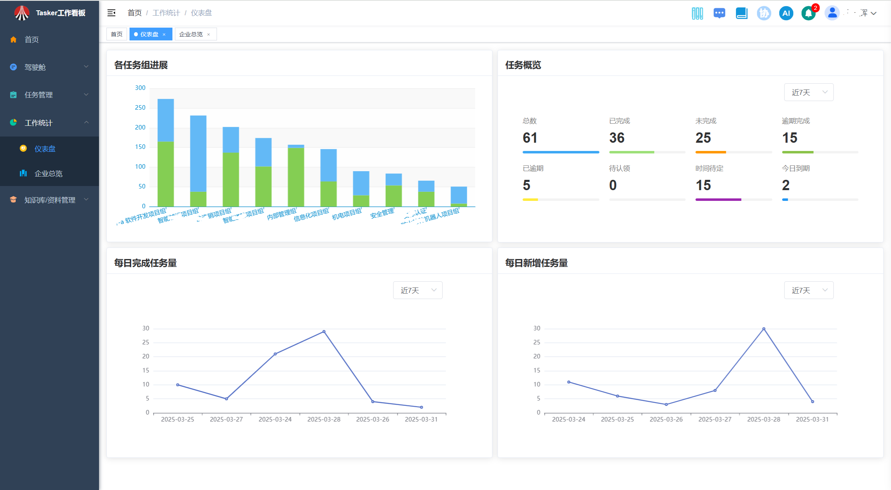
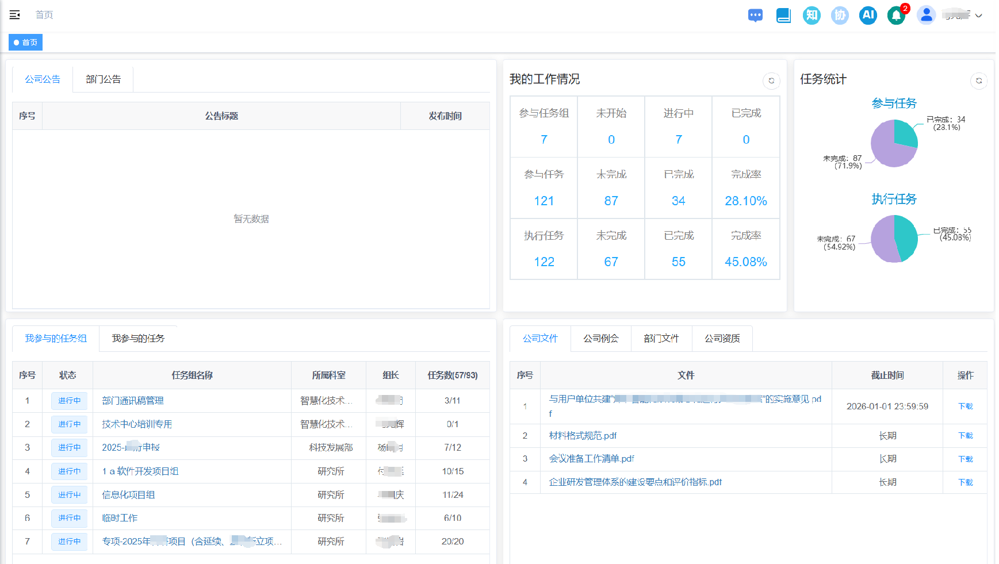
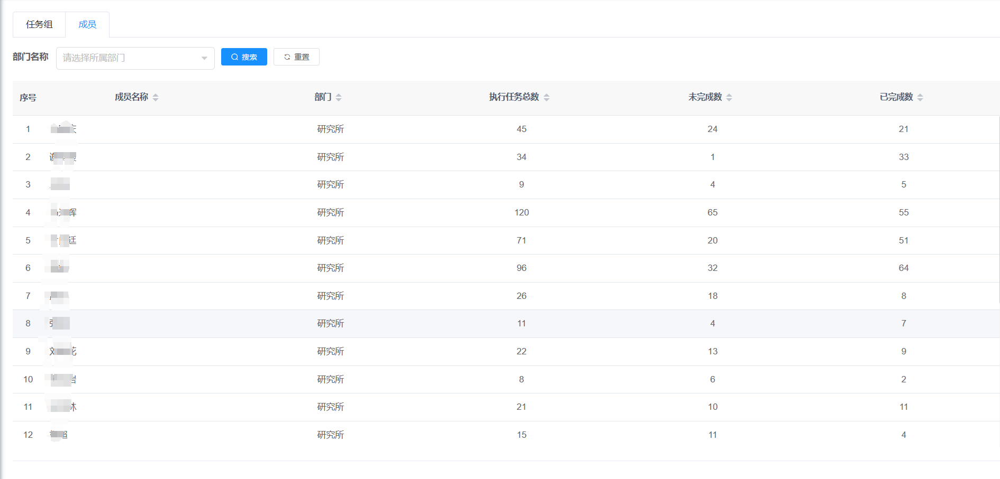
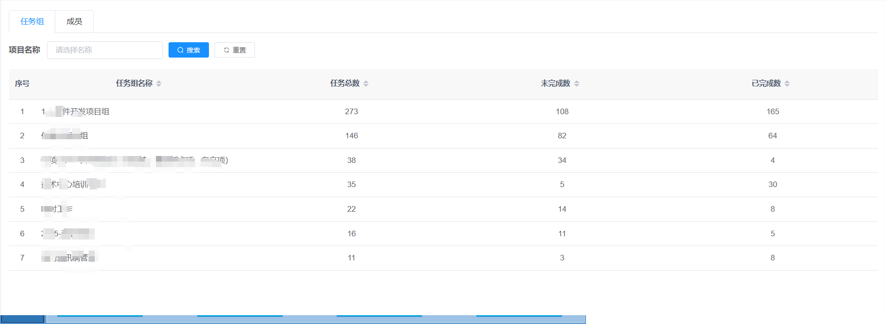

多维工作统计看板
本月任务完成率
83%
↑12%
平均响应时效
2.3h
↓0.8h
资源利用率
76%
↗15%
知识调用频次
58次/天
部门任务分布

展示各部门任务占比及完成情况
个人工作统计
企业全景视图
项目组维度

跨部门协作任务分布
员工维度
个人工作效能分析
部门维度
资源投入产出分析
资源智能调配

资源热力图解读
充足
研发部
正常
市场部
紧张
产品部
- 实时识别资源瓶颈
- 自动生成调配建议
- 历史调配方案存档